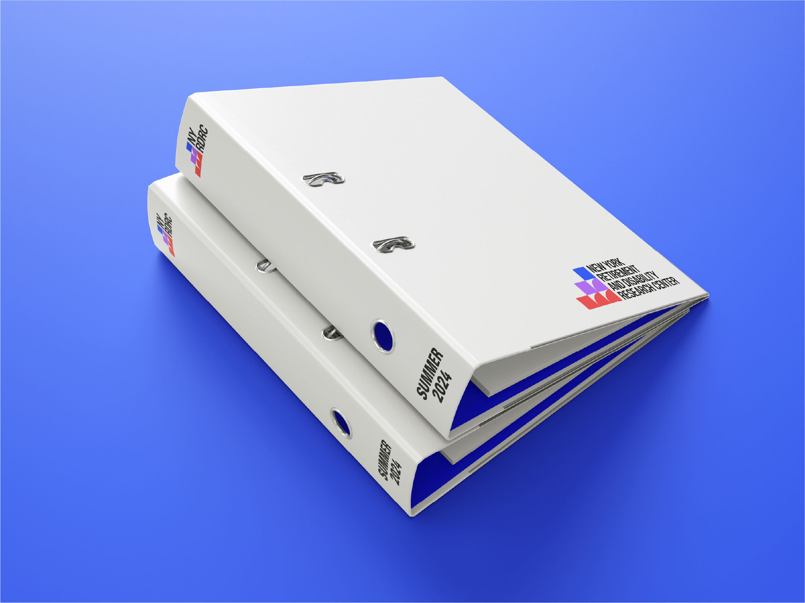
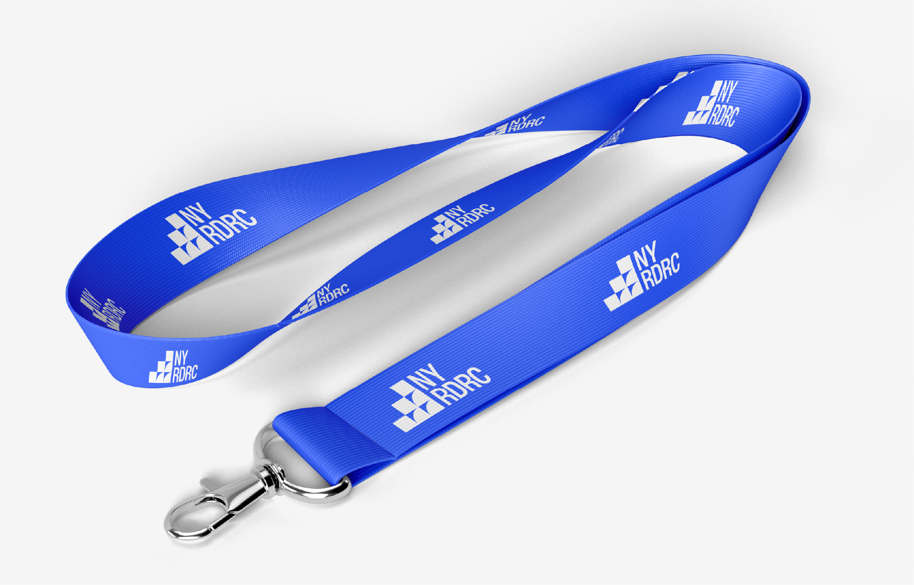
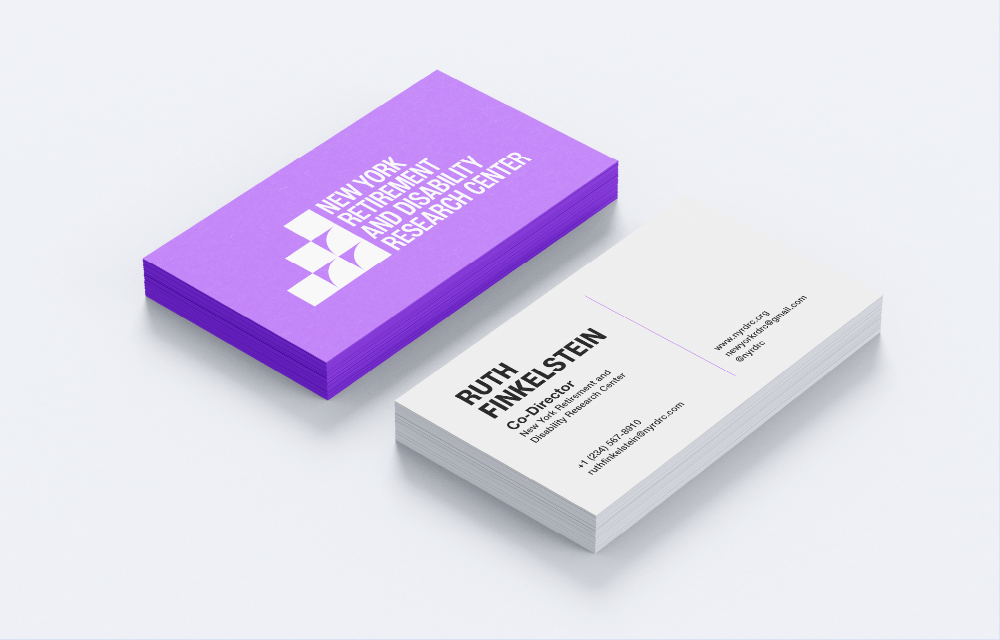
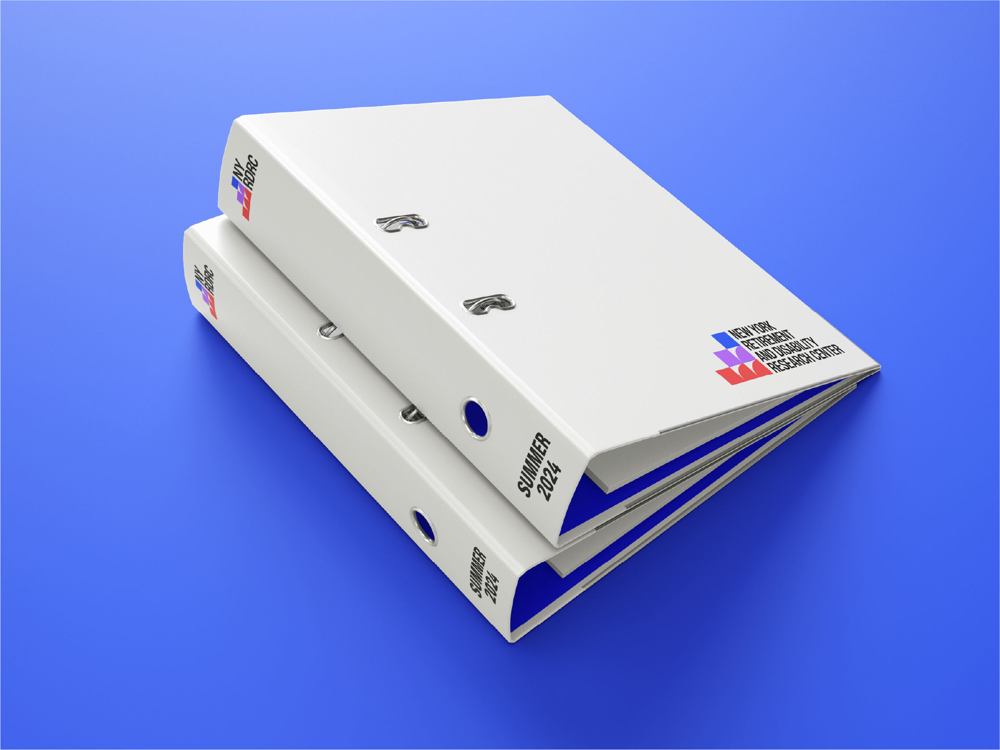
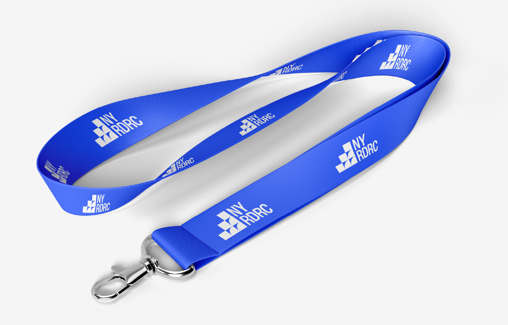
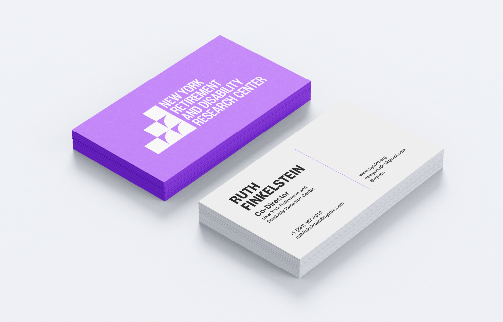

New York Retirement and Disability Research Center
Brand
The New York Retirement and Disability Research Center brings together researchers from CUNY, Hunter College, and The New School to research and report on the multifaceted challenges facing older adults and people with disabilities, caused by the political economy, geographical divides, the changing workplace, and climate instability. Their inaugural brand represents the collaborative efforts of researchers across the 3 institutions and the work they do to uplift the perspectives of marginalised members of society and the impact that public policy has on them.
Learn more about the NYRDRC here:
www.nyrdrc.org

 




